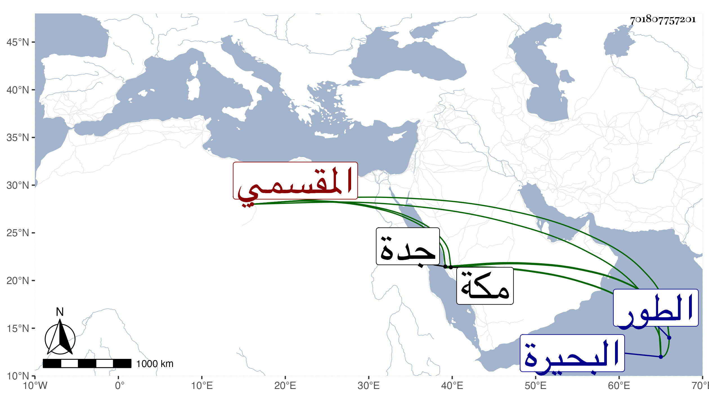

0902Sakhawi.DawLamic.ITO20230111-ara1.EIS1600.701807757201
Biography ID: 701807757201
827
عبد الكريم بن إبراهيم كريم الدين بن سعد الدين المقسمي . كان أبوه يباشر بالشرقية وبالحمامات وتخرج به ولده في ذلك وكان يتردد معه للشيخ عمر النبتيتي بحيث كان يقبل الشيخ عليه وللشيخ مدين وحفظ من كراماته ، ومات سنة ثلاث وثمانين وباشر هو في حياة أبيه البحيرة للتاج المقسي ثم نظر الطور ثم استقر في صرف جدة سنة ست وثمانين ثم في سنة تسع وثمانين ثم في سنة إحدى وتسعين والتي تليها حين تحدث أبي الفتح المنوفي فيها كلها والأخيرة خاصة من قبل الملك ثم كذلك في سنة أربع وتسعين مع الأمير شاهين الجمالي واستمر السنين التي بعدها ، ولم يرجع من مكة مع النائب في موسم سنة ثمان وتسعين بل أقام بها التي بعدها حتى قدم عليه وفي الحقيقة المرجوع في الأمور إليه دون غيره وحمده التجار ومن شاء الله لرفقه وسياسته وتواضعه وأدبه واكرامه لغير واحد من العلماء والصالحين وخضوعه لديهم ورغبته في المطالعة وخوفه من العاقبة بحيث سمعت غير واحد يتوسل في استمراره في البندر وكنت ممن يشكر صنيعه معه لكثرة تردده وتودده وربما حصل شيئا من تصانيفي والله تعالى يلطف به ويحسن عاقبته ويرضى عنه أخصامه فهو نادرة في أبناء جنسه .
